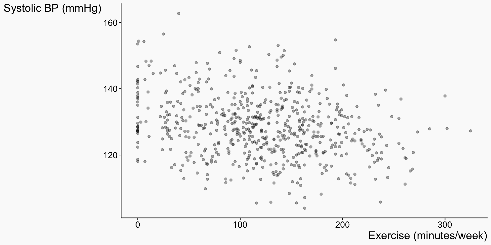
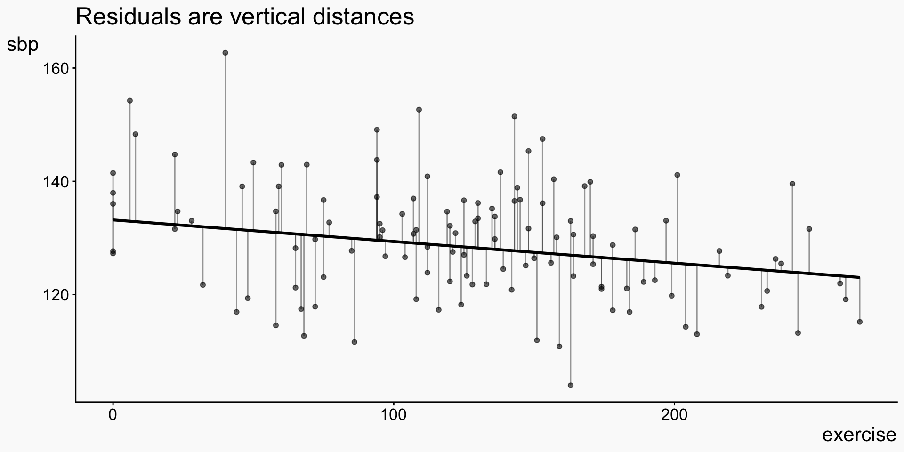
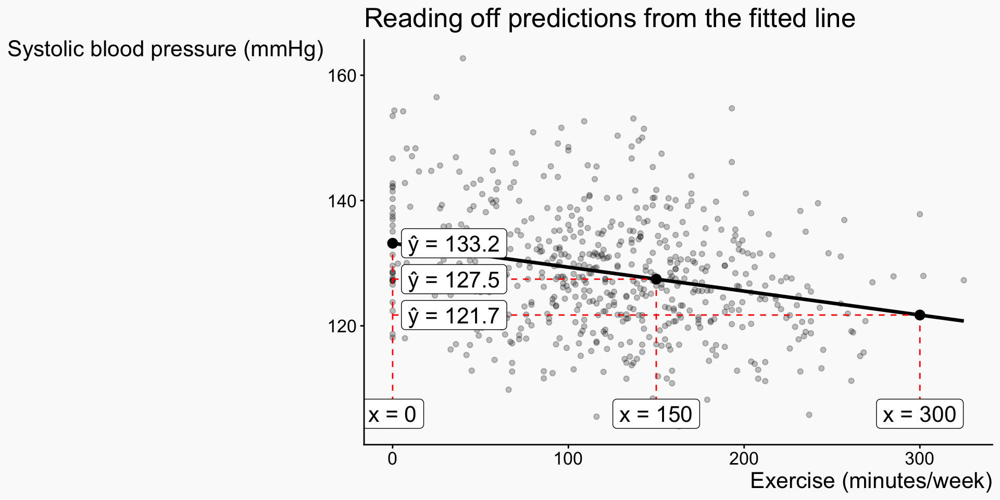
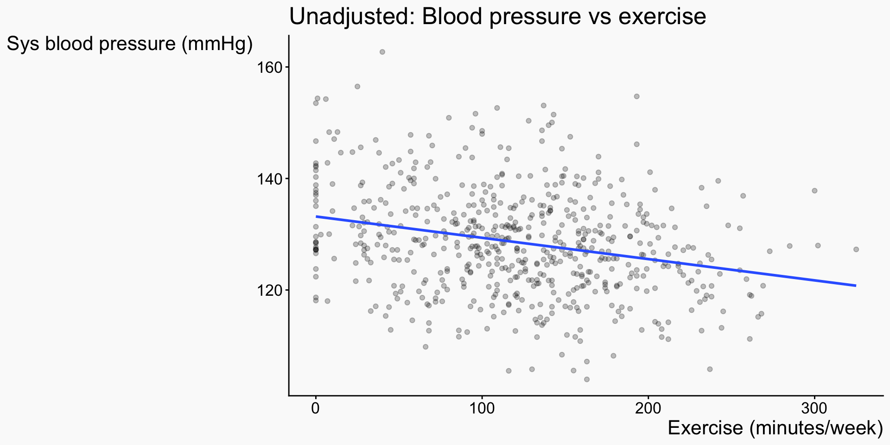
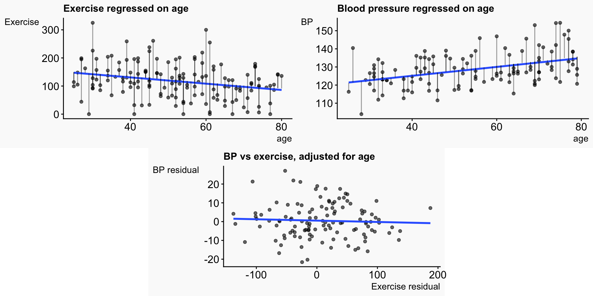
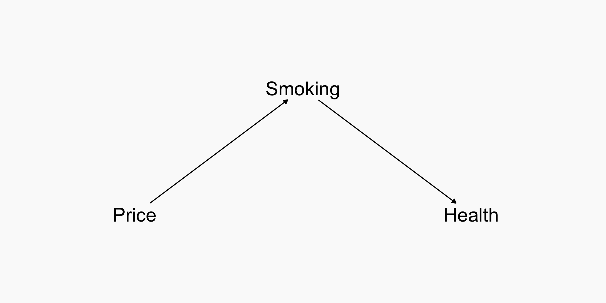
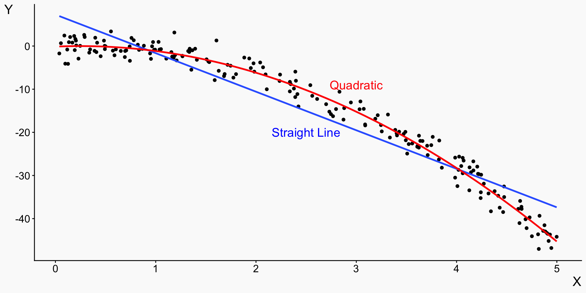
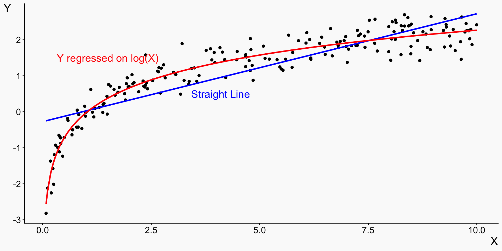
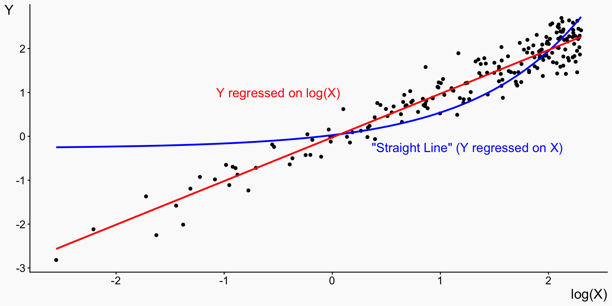
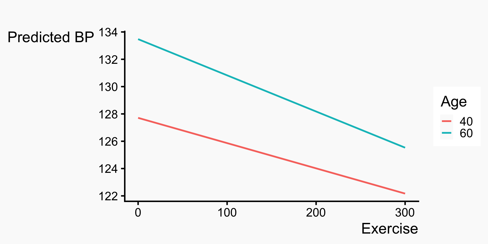

Introduction to Health Analytics
Linear Regression
Dr. Sam Burn
Course road map
| Lecture | Topic |
|---|---|
| 1 | Introduction to health data & R |
| 2 | Data visualization |
| 3 | Data wrangling & exploratory data analysis |
| 4 | Causal inference |
| 5 | Linear regression |
| 6 | Linear regression: uncertainty & hypothesis testing |
| 7 | Panel data: difference-in-differences & fixed effects |
| 8 | Limited dependent variables: LPM, logit, probit |
| 9 | Introduction to machine learning for health analytics |
| 10 | Course review |
The health analytics pipeline

Linear regression: theory and practice
What is regression?
- Regression is a model-based summary of how variables move together in data
- The same tool can be used for:
- Description: summarise patterns
- Prediction: forecast Y given X
- Causal inference: effect of changing X on Y only with extra assumptions
Working example
- Y: systolic blood pressure (BP)
- X: time spent exercising (minutes per week)
Why we need a model
- For similar X, we see many different values of Y
- We want a rule that:
- smooths noise
- generalises beyond observed values
- is interpretable
The linear regression model (population)
Y = \beta_0 + \beta_1 X + \varepsilon
- \beta_0, \beta_1 are unknown population parameters
- \beta_0 is the intercept
- \beta_1 is the slope
- \varepsilon captures unobserved determinants of Y
From model to data
- We observe data (Y_i, X_i) for i = 1, \dots, n
- The fitted model is: \widehat{Y}_i = \widehat{\beta}_0 + \widehat{\beta}_1 X_i
- \widehat{\beta}_0 is the estimated intercept
- \widehat{\beta}_1 is the estimated slope
- \widehat{Y}_i is the predicted outcome
What OLS does
- Ordinary Least Squares chooses coefficients to minimise:
\sum_i (Y_i - \widehat{Y}_i)^2
- These are squared vertical distances from points to the fitted line
OLS in R (univariate)
Call:
lm(formula = sbp ~ exercise, data = dat)
Residuals:
Min 1Q Median 3Q Max
-23.2493 -5.9080 -0.6552 5.9634 31.0499
Coefficients:
Estimate Std. Error t value Pr(>|t|)
(Intercept) 133.178784 0.783242 170.03 < 2e-16 ***
exercise -0.038184 0.005716 -6.68 5.47e-11 ***
---
Signif. codes: 0 '***' 0.001 '**' 0.01 '*' 0.05 '.' 0.1 ' ' 1
Residual standard error: 9.134 on 598 degrees of freedom
Multiple R-squared: 0.06944, Adjusted R-squared: 0.06788
F-statistic: 44.62 on 1 and 598 DF, p-value: 5.473e-11OLS in R (univariate)

Visualising residuals
dat2 <- dat %>%
mutate(
yhat = predict(m1),
resid = sbp - yhat
)
ggplot(dat2 %>% slice_sample(n = 120), aes(exercise, sbp)) +
geom_point(alpha = 0.6) +
geom_line(aes(y = yhat), linewidth = 1.1) +
geom_segment(aes(xend = exercise, yend = yhat), alpha = 0.4) +
labs(title = "Residuals are vertical distances") +
theme_metro()
Simplification is the point
- A line throws away information by design
- Memorising every point fits the data better in sample
- But performs worse out of sample (overfitting)
- Regression aims to recover a systematic relationship
How prediction works
- Once we estimate \widehat{\beta}_0, \widehat{\beta}_1:
- choose a value of X
- compute \widehat{Y} = \widehat{\beta}_0 + \widehat{\beta}_1 X

What the slope gives us (mechanically)
- A prediction rule \widehat{Y}(X)
- A summary of association in the data
- Interpretation depends on purpose:
- descriptive
- predictive
- causal (requires extra assumptions)
Key assumption for causal interpretation
- To interpret \beta_1 causally, we need conditional mean independence: \mathbb{E}[\varepsilon \mid X] = 0
- No omitted confounders
- No “bad controls”
Multivariate regression
Why simple regression can mislead
- Exercise is not randomly assigned
- For example, age affects:
- how much people exercise
- blood pressure
- Simple regression mixes these channels
The multivariate model (population)
Y = \beta_0 + \beta_1 X + \beta_2 Z + \varepsilon
- Z is a covariate (often called “control variable” or even “control”)
- \beta_1 is the association between X and Y holding Z fixed
What “controlling for” means
- Compare units with the same value of Z
- Use variation in X that is orthogonal to Z
- Relate that residual variation in X to variation in Y
- Use variation in X that is orthogonal to Z
- Adding covariate Z changes the meaning of \beta_1
- \beta_1 is identified from variation in X holding Z fixed
- Controls address confounding only under conditional mean independence: \mathbb{E}[\varepsilon_i \mid X_i, Z_i] = 0
- After conditioning on X and Z, the remaining error is unrelated to X
- If this fails (omitted variables, reverse causality, measurement error), \beta_1 is not causal
Adding covariates to the model in R
Call:
lm(formula = sbp ~ exercise + age, data = dat)
Residuals:
Min 1Q Median 3Q Max
-22.2189 -5.7923 -0.1412 5.4813 25.8231
Coefficients:
Estimate Std. Error t value Pr(>|t|)
(Intercept) 118.708574 1.524621 77.861 < 2e-16 ***
exercise -0.023378 0.005414 -4.318 1.84e-05 ***
age 0.241833 0.022483 10.756 < 2e-16 ***
---
Signif. codes: 0 '***' 0.001 '**' 0.01 '*' 0.05 '.' 0.1 ' ' 1
Residual standard error: 8.367 on 597 degrees of freedom
Multiple R-squared: 0.2205, Adjusted R-squared: 0.2179
F-statistic: 84.44 on 2 and 597 DF, p-value: < 2.2e-16Unadjusted relationship

What controlling for age looks like
- Regress exercise on age and calculate the residuals (R1)
- Regress BP on age and calculate the residuals (R2)
- Regress R2 on R1!

Omitted Variable Bias (OVB)
When does omitted variable bias occur?
- Omitted variable bias occurs when:
- A relevant variable Z affects the outcome Y
- That variable Z is correlated with the regressor of interest X
- We leave Z out of the regression
- The estimated relationship between X and Y will generally be biased and inconsistent
- Biased: the estimated effect is systematically wrong
- Inconsistent: the error does not vanish as the sample size grows
Omitted Variable Bias: Setup
- Suppose the true population model is: Y = \beta_0 + \beta_1 X + \beta_2 Z + \varepsilon
- X: exercise (minutes/week)
- Y: systolic blood pressure
- Z: age
- \varepsilon: all other unobserved factors
- But we estimate the short regression: Y = \tilde{\beta_0} + \tilde{\beta_1} X + u
- the error term is now u = \beta_2 Z + \varepsilon
Why OVB Happens
- In the short regression, X is now correlated with the error term u
- This violates the key OLS assumption: \mathbb{E}[u \mid X] = 0
- OLS no longer isolates the relationship between X and Y
- Instead, it mixes:
- the effect of X on Y
- the effect of omitted variables correlated with X
The OVB Formula
- Under standard assumptions, the expected value of the OLS slope estimator from the short regression is: \mathbb{E}[\tilde{\beta_1}]=\beta_1+\beta_2 \frac{\operatorname{Cov}(X, Z)}{\operatorname{Var}(X)}
- Interpretation:
- \beta_1: the relationship we actually care about
- \beta_2: how strongly the omitted variable affects Y
- \operatorname{Cov}(X, Z): how strongly X and Z are related
Direction of Bias
- The sign of the bias depends on two things:
- The sign of \beta_2 (does Z raise or lower Y?)
- The sign of \operatorname{Cov}(X, Z) (is Z positively or negatively related to X?)
- Examples:
- \beta_2 > 0 and \operatorname{Cov}(X, Z) > 0 → upward bias
- \beta_2 > 0 and \operatorname{Cov}(X, Z) < 0 → downward bias
- This logic lets us predict the direction of bias
OVB in Our Blood Pressure Example
- The true model is Y = \beta_0 + \beta_1 \text{exercise} + \beta_2 \text{age} + \varepsilon
- We initially estimated Y = \tilde{\beta_0} + \tilde{\beta_1} \text{exercise} + u
- Plausible relationships:
- Older age increases blood pressure → \beta_2 > 0
- Older people tend to exercise less → \operatorname{Cov}(\text{exercise}, \text{age}) < 0
- So the bias term is negative
- A regression of blood pressure on exercise without age will make exercise look more protective than it really is
Drawing the DAG
Comparing coefficients across models
exercise
-0.03818436 exercise
-0.02337822 exercise
-0.0120582 Examples of controls in the BP-exercise regression
- Age
- Gender
- Pre-existing health status
- Socioeconomic status (if pre-treatment)
Good and bad controls
Bad controls: why “control for everything” fails
- In principle, we choose controls by:
- drawing a causal diagram,
- identifying backdoor paths,
- and controlling for variables that close those paths.
- Why not just control for everything we observe?
- Because adding the wrong controls can make estimates worse, not better:
- introducing post-treatment bias,
- creating collider bias.
- washing out meaningful variation
Post-treatment bias
- A post-treatment variable is caused by the treatment.
- Controlling for it removes part of the treatment effect
- Suppose we are interested in whether the PriceOfCigarettes affect Health
- If we controlled for Smoking, then there’s no way for the price to affect health!
- We’d say that PriceOfCigarettes has no effect when really it does

Post-treatment bias: exercise and blood pressure
- Suppose exercise affects blood pressure in part because it lowers weight
- These variables lie on the causal path: \text{Exercise} \rightarrow \text{Weight} \rightarrow \text{Blood pressure}
- But we have a problem here if weight also affects the likelihood of doing exercise!
- Once behavior feeds back on itself, we need time, exogenous shocks, or both. That’s why panel data and instrumental variables are useful!
Colliders
- A collider is a variable where two causal arrows point into it.
- Example structure: X \rightarrow C \leftarrow Y
- Paths with colliders are closed by default.
- Conditioning on a collider opens the path.
- Example: You want to estimate the effect of BMI on diabetes
- You analyse data from hospital patients only.
- Hospital admission is influenced by BMI and diabetes
- By conditioning on it, you induce a spurious relationship.
Washing out too much variation
- Controlling for a variable Z removes all variation in X and Y associated with Z.
- The coefficient \widehat{\beta}_1is then interpreted as: “Within the same value of Z, a one-unit change in X changes Y by \widehat{\beta}_1.”
- We must ask whether that within-Z comparison makes sense.
- Example: Controlling for step count in our regression of BP on exercise
- “Holding step count fixed, increasing total exercise minutes” is basically “increasing non-running/walking exercise” which is a different treatment.
- The remaining variation in exercise is small and noisy.
Measurement error in X
Measurement error in X
- Suppose the true regressor X is not observed directly.
- Instead we observe:
X^{*} = X + u
- u has mean zero,
- u is uncorrelated with X and \varepsilon.
- We estimate the regression: Y = \beta_0 + \beta_1 X^{*} + \varepsilon
Direction of bias: attenuation
Under these assumptions, the expected OLS slope is: \mathbb{E}[\widehat{\beta}_1] = \beta_1 \,\frac{\operatorname{Var}(X)}{\operatorname{Var}(X) + \operatorname{Var}(u)}
- The fraction is strictly less than 1.
- Therefore:
- \widehat{\beta}_1 is biased toward zero.
- The true effect is attenuated.
- Measurement error in X makes effects look smaller than they really are.
Binary and categorical variables
Binary and categorical variables
- So far, we have focused on:
- continuous regressors
- linear relationships
- In applied health analytics, variables are often:
- binary
- categorical
Interpreting a binary regressor
- Suppose X is binary:
- X = 1: patient exercises at least 150 minutes per week
- X = 0: patient exercises less than 150 minutes per week
- Model: Y = \beta_0 + \beta_1 X + \varepsilon
- \beta_0: mean Y when X = 0
- \beta_1: difference in mean Y between X = 1 and X = 0
Binary regressor in R
Call:
lm(formula = sbp ~ active + age, data = dat)
Residuals:
Min 1Q Median 3Q Max
-23.3372 -5.9055 -0.2551 5.5998 26.5244
Coefficients:
Estimate Std. Error t value Pr(>|t|)
(Intercept) 116.26980 1.27760 91.006 < 2e-16 ***
activeTRUE -2.74654 0.74002 -3.711 0.000225 ***
age 0.25199 0.02218 11.362 < 2e-16 ***
---
Signif. codes: 0 '***' 0.001 '**' 0.01 '*' 0.05 '.' 0.1 ' ' 1
Residual standard error: 8.4 on 597 degrees of freedom
Multiple R-squared: 0.2143, Adjusted R-squared: 0.2117
F-statistic: 81.41 on 2 and 597 DF, p-value: < 2.2e-16- Coefficient on active is a mean difference.
- Controls work exactly as before.
Interpreting a categorical regressor
- Suppose X is grouped into:
- none: patient does not exercise
- some: patient exercises less than 150 minutes per week
- high: patient exercises 150+ minutes per week
- One category is omitted and becomes the reference group
- Each coefficient compares a category to that reference
- You cannot include all categories simultaneously: doing so would create perfect multicollinearity (the dummies sum to one)
Categorical regressors in R
Call:
lm(formula = sbp ~ exercise_cat + age, data = dat)
Residuals:
Min 1Q Median 3Q Max
-23.2064 -5.9029 -0.2069 5.6273 26.7063
Coefficients:
Estimate Std. Error t value Pr(>|t|)
(Intercept) 113.61185 1.23175 92.236 < 2e-16 ***
exercise_catnone 4.58245 1.71140 2.678 0.007619 **
exercise_catsome 2.62028 0.74734 3.506 0.000489 ***
age 0.25016 0.02222 11.256 < 2e-16 ***
---
Signif. codes: 0 '***' 0.001 '**' 0.01 '*' 0.05 '.' 0.1 ' ' 1
Residual standard error: 8.397 on 596 degrees of freedom
Multiple R-squared: 0.2162, Adjusted R-squared: 0.2122
F-statistic: 54.78 on 3 and 596 DF, p-value: < 2.2e-16- What is the omitted category?
Specifying the reference category
Call:
lm(formula = sbp ~ exercise_cat + age, data = dat)
Residuals:
Min 1Q Median 3Q Max
-23.2064 -5.9029 -0.2069 5.6273 26.7063
Coefficients:
Estimate Std. Error t value Pr(>|t|)
(Intercept) 118.19431 2.06110 57.345 < 2e-16 ***
exercise_catsome -1.96217 1.64938 -1.190 0.23466
exercise_cathigh -4.58245 1.71140 -2.678 0.00762 **
age 0.25016 0.02222 11.256 < 2e-16 ***
---
Signif. codes: 0 '***' 0.001 '**' 0.01 '*' 0.05 '.' 0.1 ' ' 1
Residual standard error: 8.397 on 596 degrees of freedom
Multiple R-squared: 0.2162, Adjusted R-squared: 0.2122
F-statistic: 54.78 on 3 and 596 DF, p-value: < 2.2e-16- First level of factor variable will always be the reference
Polynomials
Functional form
- Sometimes a straight line is not a good description of the relationship.
- As long as the nonlinearity is on the right-hand side, OLS still works.
- We fix this by letting X enter nonlinearly via transformations.
- The two most common: polynomials and logarithms.
Functional Form
- Why do this? Because sometimes a straight line is clearly not going to do the trick!
ggplot(df, aes(x = X, y = Y)) +
geom_point() +
geom_smooth(method = 'lm', se = FALSE) +
geom_line(aes(x = X, y = predict(lm(Y~X+I(X^2), data = df))), color = 'red', size = 1) +
theme_metro() +
annotate(geom = 'text', x = 2.5, y = -20, label = 'Straight Line', color = 'blue', size = 15/.pt) +
annotate(geom = 'text', x = 3, y = -9, label = 'Quadratic', color = 'red', size = 15/.pt)
Interpreting polynomials
- With polynomials, the effect of X depends on the value of X.
- Interpret effects using the derivative. Y = \beta_1 X + \beta_2 X^2 \frac{\partial Y}{\partial X} = \beta_1 + 2\beta_2 X
- The slope changes with X.
- Individual coefficients are not meaningful on their own.
- Test polynomial terms jointly, not one by one.
Polynomials in R
- We can add an
I()function to our regression to do a calculation on a variable before including it. SoI(X^2)adds a squared term - There’s also a
poly()function but you must setraw=TRUEif you do
Higher order polynomials
- Adding terms makes the relationship more flexible.
- \beta_1 X: linear (first order)
- \beta_1 X + \beta_2 X^2: quadratic (second order)
- \beta_1 X + \beta_2 X^2 + \beta_3 X^3: cubic
- In practice, quadratics are usually enough.
- Higher-order terms often add noise and hurt interpretation.
Log transformations
Log transformations
- Sometimes a linear relationship in levels is a poor approximation.
- Common reasons to transform variables:
- diminishing returns
- skewed distributions
- interest in percentage changes
Log transformations

Log transformations
- Notice the change in axes

Interpreting logarithms
- Logs turn changes in a variable into percentage changes.
- Key idea: \Delta\log(X)\approx \%\Delta X
- This approximation works well for small changes (e.g. 1–10%)
- Linear-log regression
- Y = \beta_0 + \beta_1 \log(X)
- 1% increase in X is associated with a \beta_1/100 unit change in Y
- Y = \beta_0 + \beta_1 \log(X)
- Log-linear regression
- \log(Y) = \beta_0 + \beta_1 X
- One-unit increase in X is associated with a \beta_1 \times 100\% change in Y
- Log-log regression
- \log(Y) = \beta_0 + \beta_1 \log(X)
- 1% increase in X is associated with a \beta_1\% change in Y
- For large changes, interpret exactly:
- \log(Y) = \beta_0 + \beta_1 X: 1 unit increase in X is associated with (e^{\beta_1}-1)\times 100\% increase in Y
- Y = \beta_0 + \beta_1 \log(X): Going from X_0 to X_1 is associated with an increase in Y of \beta_1[\log(X_1)/\log(X_0)]
- \log(Y) = \beta_0 + \beta_1 \log(X): A 1% increase in X is associated with a (1.01^\beta_1-1)\times 100\% change in Y
Log model in R
Call:
lm(formula = log(sbp) ~ exercise + age, data = dat)
Residuals:
Min 1Q Median 3Q Max
-0.188030 -0.044526 0.000717 0.044342 0.180647
Coefficients:
Estimate Std. Error t value Pr(>|t|)
(Intercept) 4.778e+00 1.181e-02 404.407 < 2e-16 ***
exercise -1.802e-04 4.196e-05 -4.295 2.04e-05 ***
age 1.859e-03 1.742e-04 10.668 < 2e-16 ***
---
Signif. codes: 0 '***' 0.001 '**' 0.01 '*' 0.05 '.' 0.1 ' ' 1
Residual standard error: 0.06484 on 597 degrees of freedom
Multiple R-squared: 0.2179, Adjusted R-squared: 0.2153
F-statistic: 83.15 on 2 and 597 DF, p-value: < 2.2e-16- The coefficient on exercise is -0.00018.
- This means:
- 1 minute more per week of exercise \rightarrow \quad \approx 0.018% lower BP
- 100 minutes more per week of exercise \rightarrow \quad \approx 1.8% lower BP
Downsides of logarithms
- Logarithms require that all data be positive. No negatives or zeroes!
- Zeroes are common! A common practice is to just do log(X+1) or asinh(X)=\ln(X+\sqrt{X^2+1}) but these are pretty arbitrary
- On the left-hand side at least, better to deal with 0s with Poisson regression
Functional form takeaways
- In general, you want the shape of your function to match the shape of the relationship in the data (or, even better, the true relationship)
- Polynomials and logs can usually get you there!
- Which to use? Use logs for highly skewed data or variables with exponential relationships
- Use polynomials if it doesn’t look straight! Check that scatterplot and see how not-straight it is!
Interactions
Interactions
- Sometimes the effect of X depends on another variable.
- Example: Exercise may reduce blood pressure more (or less) for younger patients than for older patients
- Interaction model
Y = \beta_0 + \beta_1 X + \beta_2 Z + \beta_3 (X \times Z) + \varepsilon
- \beta_1: effect of X when Z = 0
- \beta_3: how the effect of X changes with Z
Interaction in R
Call:
lm(formula = sbp ~ exercise * age, data = dat)
Residuals:
Min 1Q Median 3Q Max
-22.5512 -5.6554 -0.2441 5.5699 25.1168
Coefficients:
Estimate Std. Error t value Pr(>|t|)
(Intercept) 1.162e+02 2.606e+00 44.582 < 2e-16 ***
exercise -2.479e-03 1.834e-02 -0.135 0.893
age 2.881e-01 4.484e-02 6.425 2.7e-10 ***
exercise:age -4.001e-04 3.355e-04 -1.193 0.234
---
Signif. codes: 0 '***' 0.001 '**' 0.01 '*' 0.05 '.' 0.1 ' ' 1
Residual standard error: 8.364 on 596 degrees of freedom
Multiple R-squared: 0.2224, Adjusted R-squared: 0.2184
F-statistic: 56.81 on 3 and 596 DF, p-value: < 2.2e-16- Main effects and interaction terms must be interpreted together
- The coefficient on exercise alone is no longer the “average effect”
Visualising interactions
- Different slopes show how the effect of exercise depends on age

Notes on interactions
Y = \beta_0 + \beta_1 X + \beta_2 Z + \beta_3 (X \times Z) + \varepsilon
- The coefficients on their own now have little meaning and must be evaluated alongside each other. \beta_1 by itself is just “the effect of X when Z = 0”, not “the effect of X”
- Yes usually want to include both variables in un-interacted form and interacted form.
- Interaction effects are poorly powered. You need a lot of data to be able to tell whether an effect is different in two groups.
Key Takeaways
- A linear regression model of Y on X fits a straight line: Y_i = \beta_0 + \beta_1 X_i + \varepsilon_i
- \beta_1 is the slope of this line: the average change in Y associated with a one-unit increase in X
- How X is coded matters for interpretation (levels, logs, binary/categorical variables)
- In a multivariate regression, Y_i = \beta_0 + \beta_1 X_i + \beta_2 Z_i + \varepsilon_i
- \beta_1 measures the relationship between X and Y adjusting for Z
- Controls address confounding only under conditional mean independence: \mathbb{E}[\varepsilon_i \mid X_i, Z_i] = 0
- Omitted variable bias arises if relevant confounders are excluded and correlated with X
- Measurement error in regressors can bias coefficients towards zero
- Controlling for the wrong variables can introduce bias:
- Conditioning on colliders opens spurious correlations
- Controlling for post-treatment variables blocks part of the causal effect
- Conditioning on colliders opens spurious correlations
Coming Next
- How to quantify uncertainty around estimated coefficients
- How to interpret standard errors, t-statistics, p-values, and confidence intervals
- Testing single and multiple hypotheses using t-tests and F-tests
- Reading regression tables critically